Guide Utilisateur - Profil Manager
Ce document est une compilation de la documentation pour impression.
\newpage
Bienvenue dans votre Espace de Gestion
Bonjour et bienvenue dans le guide dédié au Gestionnaire.
En tant que Gestionnaire (ou Administrateur), vous êtes le capitaine du navire. Votre rôle est de superviser l'ensemble des opérations : de l'ouverture de la journée comptable à la validation des stocks, en passant par le contrôle des ventes et des tontines.
Ce guide est conçu pour vous accompagner pas à pas dans le pilotage de l'application Gestion Elykia.
1. Se Connecter
Tout commence ici. Pour accéder à votre tableau de bord :
- Allez sur la page de connexion.
- Entrez votre Identifiant et votre Mot de passe.
- Cliquez sur SE CONNECTER.
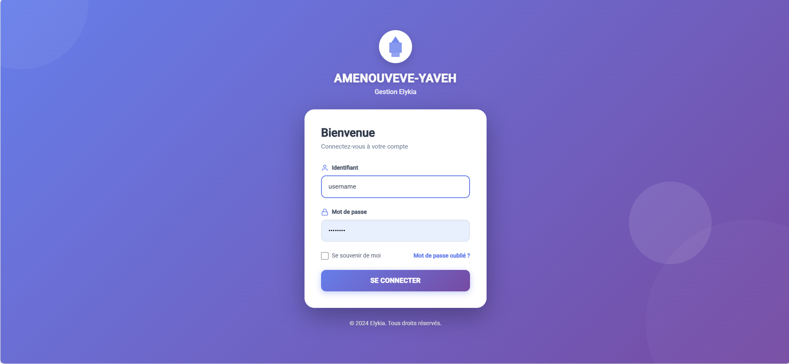
Vous voilà connecté. Découvrons votre environnement de travail.
2. Votre Interface de Pilotage
Une fois connecté, l'écran se divise en deux parties simples :
- À gauche : Le Menu de Navigation. C'est votre boîte à outils. Tout ce dont vous avez besoin est listé ici.
- Au centre : Votre Espace de Travail. C'est là que les informations s'affichent.
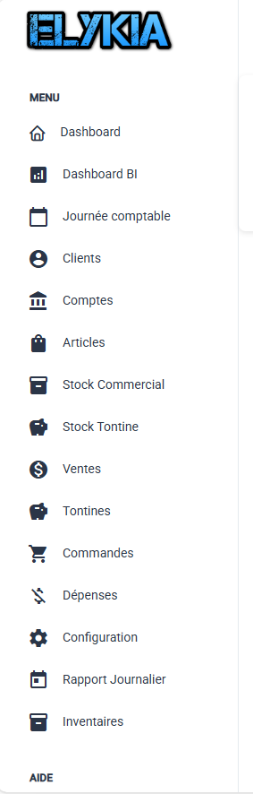
Que trouve-t-on dans votre menu ?
Voici un tour rapide de vos outils, dans l'ordre où vous les verrez :
- Dashboard : Votre météo du jour (chiffres clés, alertes).
- Dashboard BI : Pour aller plus loin dans l'analyse financière.
- Journée comptable : L'interrupteur ON/OFF de l'activité quotidienne.
- Clients : Votre base de données clients.
- Comptes : La santé financière de vos clients.
- Articles : Votre catalogue de produits.
- Stock Commercial : Pour savoir où est la marchandise.
- Stock Tontine : Le stock dédié à l'épargne.
- Ventes : Le cœur du business.
- Tontines : La gestion de l'épargne.
- Commandes : Le sas de validation avant vente.
- Dépenses : Pour suivre les sorties de caisse.
- Configuration : Les réglages de l'application.
- Rapport Journalier : Pour faire le bilan et fermer la caisse.
- Inventaires : Pour vérifier que le stock virtuel correspond à la réalité.
Prêt à prendre les commandes ? Commençons par découvrir votre Tableau de Bord.
\newpage
Vos Tableaux de Bord (Dashboards)
Piloter une entreprise sans tableau de bord, c'est comme conduire les yeux fermés. Ici, nous vous donnons les outils pour voir clair, tout de suite.
Nous avons séparé les choses en deux : l'opérationnel (pour l'action immédiate) et le décisionnel (pour l'analyse).
1. Le Dashboard Principal (L'Opérationnel)
C'est la première chose que vous voyez en arrivant. Son but est simple : vous dire ce qui se passe maintenant.
a. La Vue d'Ensemble
Tout en haut, quatre chiffres vous donnent le pouls de l'agence : * Combien de Clients avons-nous ? (Avec la tendance : est-ce que ça monte ?) * Combien de Comptes actifs ? * Quelle est l'étendue de notre catalogue (Total Articles) ? * Combien de Localités couvrons-nous ?
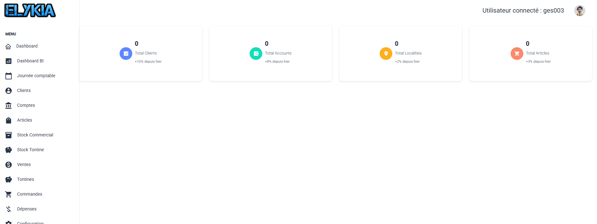
b. Les Alertes Stock (Urgent !)
Si vous gérez aussi le stock, cette partie est critique. Elle vous crie ce qui ne va pas : 1. Rupture de stock : Ces produits sont à 0. Il faut commander tout de suite ! 2. Rupture imminente : Attention, le stock est bas (zone orange ou rouge). Prévoyez le réassort.
Vous avez géré les urgences ? Passons à l'analyse de fond.
2. Le Dashboard BI (Le Décisionnel)
Besoin de prendre du recul ? Cliquez sur Dashboard BI dans le menu. Ici, on parle argent et stratégie.
a. Choisissez votre période
Vous voulez voir les chiffres d'aujourd'hui ? De la semaine ? Ou de l'année entière ? Utilisez les filtres en haut pour définir la période d'analyse.
b. La Santé Financière
Quatre cartes vous disent si l'entreprise est en bonne santé : 1. Chiffre d'Affaires : Combien avons-nous vendu ? 2. Marge Brute : Combien avons-nous réellement gagné (Bénéfice) ? 3. Encaissements : L'argent est-il rentré dans la caisse ? 4. Valeur du Stock : Combien d'argent "dort" dans notre entrepôt ?
c. Le Centre d'Alertes
C'est votre radar à problèmes. Il surveille pour vous : * Les articles qui manquent. * Les crédits clients qui sont en retard (Impayés). * Votre taux de recouvrement (Êtes-vous efficace dans la collecte des dettes ?).
Conseil de pro : Si le taux de recouvrement est rouge (< 50%), c'est votre priorité numéro 1 : relancez les commerciaux !
d. Liens Rapides
Besoin de creuser un chiffre ? Utilisez les boutons d'accès direct pour ouvrir les rapports détaillés : * Analyse des Ventes * Analyse des Recouvrements * Analyse du Stock
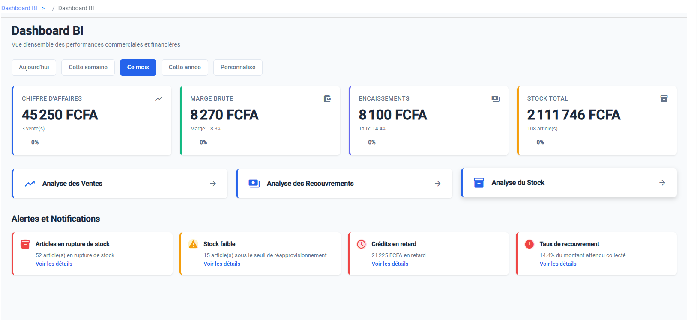
Vous avez maintenant une vision claire de la situation. Passons à l'action sur le terrain.
\newpage
Les Opérations Quotidiennes
Ici, nous allons voir comment gérer le quotidien : ouvrir la boutique, accueillir les clients et surveiller leurs comptes.
1. La Journée Comptable (Le "Top Départ")
Imaginez que vous ouvrez le rideau de fer du magasin. Dans l'application, c'est pareil. Règle d'or : Aucune vente ni encaissement n'est possible si la journée n'est pas ouverte.
Allez dans Journée comptable. * Le matin : Cliquez sur Ouvrir une nouvelle journée. * Le soir (après avoir tout vérifié) : Cliquez sur Fermer la journée.

La journée est ouverte, vous êtes prêt à recevoir les clients.
2. Gérer vos Clients
Le client est roi, et son dossier doit être impeccable. C'est dans le menu Clients que ça se passe.
a. Rechercher avant de créer
Avant d'ajouter quelqu'un, ayez le réflexe de vérifier s'il n'est pas déjà là. Utilisez la barre de recherche avec son nom ou son numéro de téléphone. Ça évite les doublons !

b. Accueillir un Nouveau Client
C'est un nouveau ? Bienvenue à lui ! 1. Cliquez sur Ajouter. 2. Prenez le temps de bien remplir sa fiche : * Qui est-il ? Nom, Prénom, Photo. * Où habite-t-il ? Adresse précise (la géolocalisation aide beaucoup). * Qui s'occupe de lui ? Assignez-lui ses Commerciaux responsables (pour le Crédit et la Tontine). * Finance : Définissez son solde initial. 3. Validez.

c. Mettre à jour un dossier
Le client a déménagé ? Il a changé de numéro ? Dans la liste, utilisez les petits boutons à droite : * L'Œil pour voir tout son historique. * Le Crayon pour modifier ses infos. * La Corbeille pour supprimer (Attention, c'est irréversible !).

Votre base client est propre. Voyons maintenant leur situation financière.
3. Surveiller les Comptes (L'Argent)
Le menu Comptes est votre tour de contrôle financière. Il répond à la question : "Est-ce que ce client est solvable ?"
a. Coup d'œil rapide
Dans la liste, regardez la colonne Solde. * Positif ? Il a de l'avance. * Négatif ? Il nous doit de l'argent.
Regardez aussi le Statut. Si un compte est Bloqué, le client ne pourra plus rien acheter à crédit tant que vous ne l'aurez pas débloqué.

b. Analyser en détail
Cliquez sur l'Œil d'un compte pour voir sa fiche. C'est ici que vous pouvez intervenir manuellement si besoin (par exemple pour corriger une erreur ou bloquer le compte d'un mauvais payeur).

Vous maîtrisez la gestion des clients. Passons maintenant à la gestion des stocks et des ventes.
\newpage
Stocks, Ventes et Commandes
C'est le cœur du réacteur. Ici, nous gérons le flux de marchandises (du stock vers le client) et le flux d'argent (la vente).
1. Votre Catalogue (Articles)
Le menu Articles, c'est votre vitrine. Il liste tout ce que vous pouvez vendre.
a. Consulter le catalogue
La liste vous montre tous vos produits avec leur marque, modèle et type.

b. Ajouter un produit
Pour ajouter un nouveau produit : 1. Cliquez sur Ajouter. 2. Définissez bien son identité (Nom, Marque) et surtout ses Prix (Achat, Vente Comptant, Vente Crédit). 3. N'oubliez pas les seuils d'alerte stock pour être prévenu avant la rupture !

Votre catalogue est prêt. Il faut maintenant distribuer ces produits.
2. Le Stock Commercial (La Marchandise Ambulante)
Vos commerciaux partent sur le terrain avec de la marchandise. Vous devez savoir exactement ce qu'ils ont.
a. Donner du stock (Approvisionnement)
Un commercial a besoin de produits ? 1. Allez dans Stock Commercial > Demandes Sortie. 2. Créez une Nouvelle Demande pour lui. 3. Important : Une fois la demande créée, vous devez la VALIDER (bouton vert). * Pourquoi ? Tant que vous ne validez pas, le magasinier ne voit rien et ne peut pas livrer la marchandise.

b. Surveiller le stock des agents
Allez dans Stock Commercial > Stock. Ce tableau est redoutable. Il vous dit pour chaque commercial : * Ce qu'il a pris. * Ce qu'il a vendu. * Ce qu'il doit encore avoir dans les mains (Restant).
Conseil : En fin de journée, jetez un œil ici. Si un commercial dit "J'ai tout vendu" mais que le tableau dit le contraire, il y a un problème.

c. Gérer les Retours
Si un commercial ramène des invendus, cela apparaît dans Stock Commercial > Retours. Vérifiez que le magasinier a bien validé la réception pour que le stock de l'agent soit mis à jour.

Vous savez où est votre stock. Voyons les spécificités de la Tontine.
3. Le Stock Tontine
C'est exactement le même principe que le Stock Commercial, mais pour les produits réservés à la Tontine. Veillez bien à ne pas mélanger les deux stocks physiquement !

4. Les Commandes (Le Sas de Validation)
Avant de devenir une vente ferme, une demande client passe souvent par la case "Commande". C'est ici que vous donnez votre feu vert.
a. Votre rôle de contrôleur
Allez dans le menu Commandes. Regardez les indicateurs en haut : Commandes en Attente. C'est votre "To-Do List".

b. Créer une commande
Vous pouvez aussi créer une commande vous-même pour un client : 1. Cliquez sur Ajouter. 2. Choisissez le client et remplissez son panier. 3. Enregistrez. Elle passe en attente de validation.

c. Valider et Vendre
- Ouvrez une commande en attente (l'œil).
- Vérifiez tout : Est-ce le bon client ? Les bons prix ?
- Si c'est bon, cliquez sur Valider. La commande est acceptée.
- Pour finaliser la transaction, cliquez sur Transformer en Vente.
- Attention : À ce moment-là, le stock sort et la dette client est créée. C'est irréversible.

La vente est actée. Mais est-ce que le stock physique suit ? C'est l'heure de l'inventaire.
5. Les Inventaires (L'Heure de Vérité)
Régulièrement, il faut vérifier que le stock de l'ordinateur correspond au stock réel de l'entrepôt.
Comment faire un inventaire sans douleur ?
- Figer : Créez un nouvel inventaire. Le système prend une "photo" du stock théorique.
- Compter : Imprimez la fiche (PDF) et allez compter dans l'entrepôt. Ne regardez pas les chiffres de l'ordi pour ne pas être influencé !
- Saisir : Revenez et entrez vos chiffres réels dans le système.
- Réconcilier : Le système va vous montrer les écarts.
- Il y en a plus ? Tant mieux (Surplus).
- Il en manque ? Aïe. Vous devez justifier pourquoi (Vol ? Perte ? Erreur ?).
- Clôturer : Une fois tout justifié, validez. Le stock réel devient la nouvelle référence.

Ajouter du stock (Entrées)
Pour ajouter du stock venant d'un fournisseur (hors inventaire), utilisez le bouton + Entrées.

Votre stock est carré. Terminons par les ventes directes.
6. Les Ventes Directes
Parfois, vous vendez directement au comptoir, sans passer par un commercial terrain.
a. Créer une vente
- Allez dans Ventes et cliquez sur +.
- Choisissez Comptant (si le client paie tout de suite) ou Crédit.
- Remplissez le panier et validez.
b. Suivre les ventes
Dans la liste des ventes, vous pouvez suivre la vie de chaque crédit : combien le client a déjà payé, combien il reste, et s'il est en retard. Utilisez la Recherche Avancée (la loupe) pour filtrer par statut ou par commercial.

Vous maîtrisez maintenant tout le cycle commercial.
\newpage
Finances et Tontines
L'argent est le nerf de la guerre. Ici, nous gérons ce qui sort (Dépenses) et l'épargne de nos clients (Tontines).
1. Gérer les Dépenses (Sorties de Caisse)
Chaque franc qui sort de la caisse doit être justifié. Le menu Dépenses est là pour ça.
a. Tableau de Bord Dépenses
Voyez tout de suite combien vous avez dépensé cette semaine ou ce mois-ci.
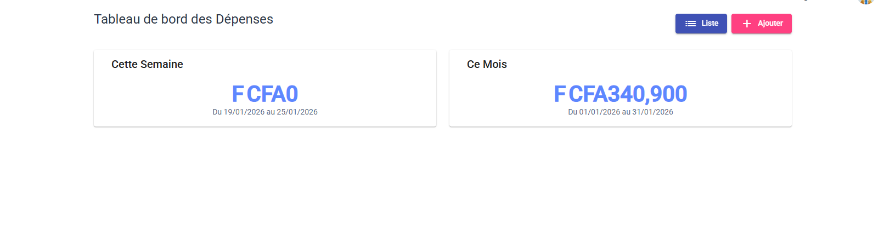
b. Enregistrer une dépense
Vous avez payé l'électricité ou le carburant ? 1. Cliquez sur Ajouter. 2. Dites-nous tout : * C'est quoi ? (Type : Loyer, Transport...). * Combien ? (Montant). * La preuve ? (Référence du reçu). 3. Enregistrez.
C'est essentiel pour que votre caisse soit juste le soir.
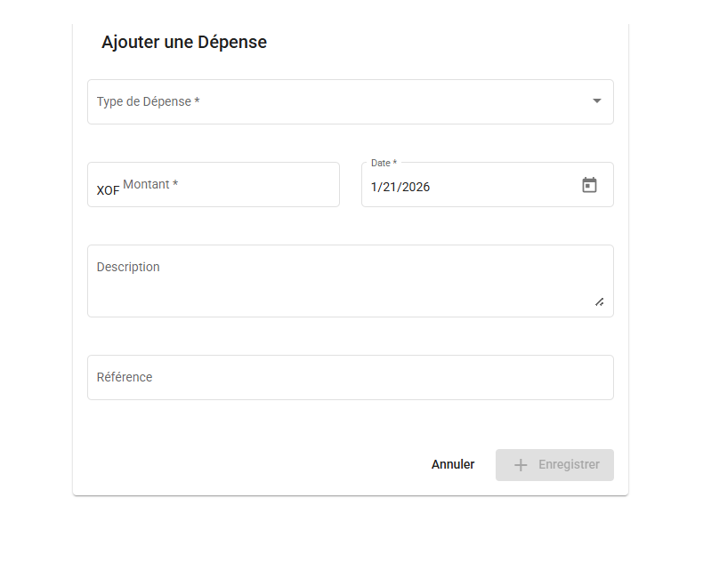
c. Suivre l'historique
La liste vous permet de retrouver n'importe quelle dépense passée, de la modifier ou de la supprimer en cas d'erreur.
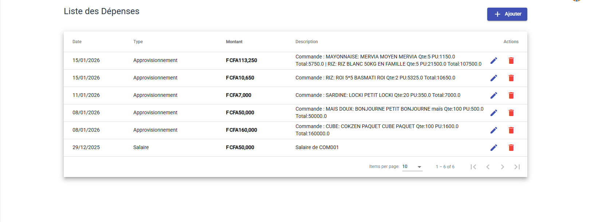
Vos dépenses sont tracées. Parlons maintenant de l'épargne client.
2. La Gestion des Tontines
La Tontine est un produit phare. C'est de l'épargne programmée pour vos clients.
a. Le Tableau de Bord Tontine
C'est votre tour de contrôle. Vous voyez en un coup d'œil : * Combien de membres cotisent activement. * Combien d'argent a été collecté au total (C'est bon pour la trésorerie !). * Qui attend sa livraison (Les clients qui ont fini de payer).
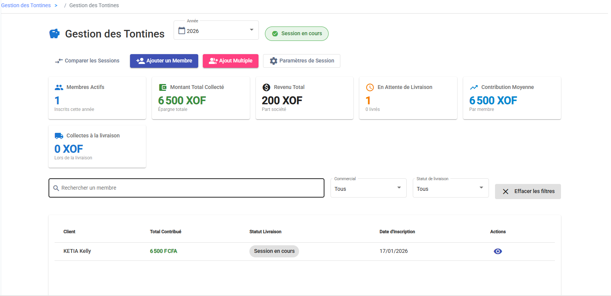
b. Inscrire des Membres
Vous avez deux façons de faire :
1. Un par un (Au comptoir) Cliquez sur Ajouter un Membre. Choisissez le client, fixez avec lui le montant de sa mise et la fréquence (tous les jours ? toutes les semaines ?).

2. En masse (Par Commercial) C'est très pratique pour lancer une nouvelle zone. Cliquez sur Ajout Multiple. * Choisissez le Commercial responsable. * Définissez les règles par défaut (ex: 500F par jour). * Cochez tous les clients de sa liste qui participent. * Validez tout d'un coup !
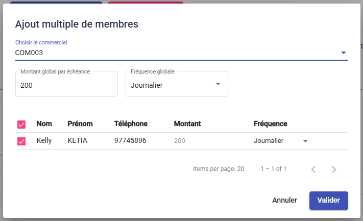
Votre tontine est lancée. Il ne reste plus qu'à suivre les collectes.
\newpage
Rapports et Configuration
C'est la fin de la journée, ou le moment de régler la machine.
1. Le Rapport Journalier (L'Heure du Bilan)
C'est sans doute l'écran le plus important de votre fin de journée. Il vous permet de contrôler la caisse de chaque commercial et de fermer la boutique sereinement.
Allez dans Rapport Journalier.
a. La Vue d'Ensemble
Le premier onglet vous donne les grands chiffres de la journée (ou de la période choisie). Utilisez les filtres en haut pour changer de date ou cibler un commercial.
Regardez surtout le bloc Caisse : * A Verser : C'est ce que les commerciaux devraient avoir dans leurs poches (selon l'ordi). * Versé : C'est ce qu'ils vous ont réellement donné. * Reste : C'est la différence. Si c'est rouge, il manque de l'argent !
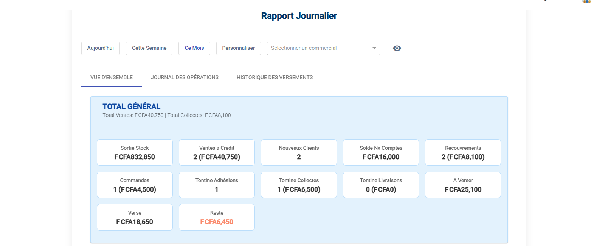
b. Contrôler un Commercial
Déroulez la liste pour voir le détail par agent. Le cadre de couleur vous parle : * Rouge ? Il doit de l'argent. * Vert ? Il est à jour, tout va bien.
Il vous tend des billets ? Cliquez sur le bouton FAIRE UN VERSEMENT dans sa case. Entrez le montant que vous prenez. Le système mettra sa dette à jour instantanément.
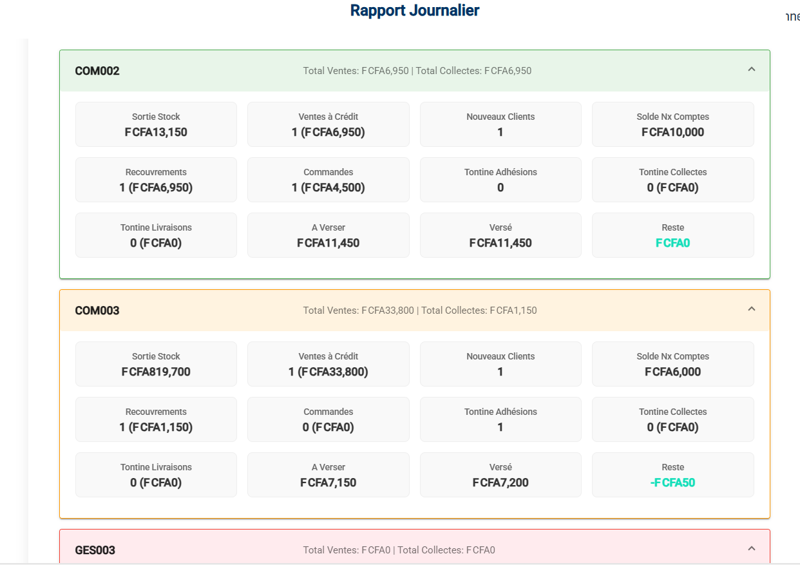
c. L'Audit (Qui a fait quoi ?)
L'onglet Journal des Opérations est votre mouchard. Il liste tout : chaque vente, chaque suppression, chaque encaissement, avec l'heure et l'auteur. Utile en cas de litige.
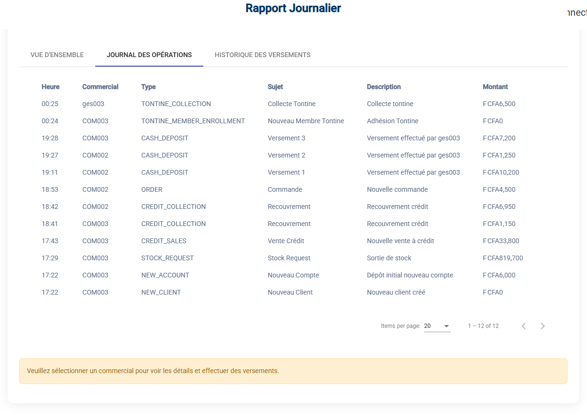
d. Historique des Versements
L'onglet Versements garde la trace de toutes les remises d'espèces que vous avez validées.
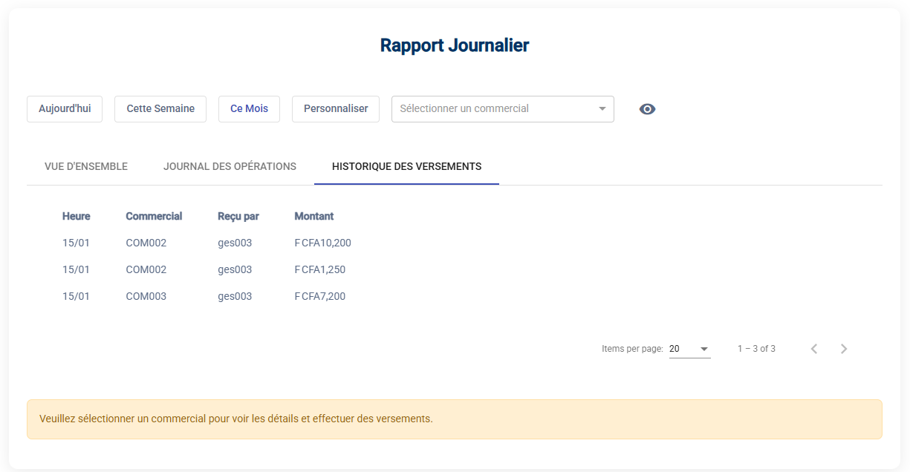
La caisse est juste ? Vous pouvez fermer la journée comptable.
2. Configurer l'Application
Le menu Configuration est réservé aux experts. C'est ici qu'on paramètre le moteur.
a. Les Localités (Zones)
Pour que la géolocalisation serve à quelque chose, il faut définir vos zones. Ajoutez vos Villes et Quartiers ici.
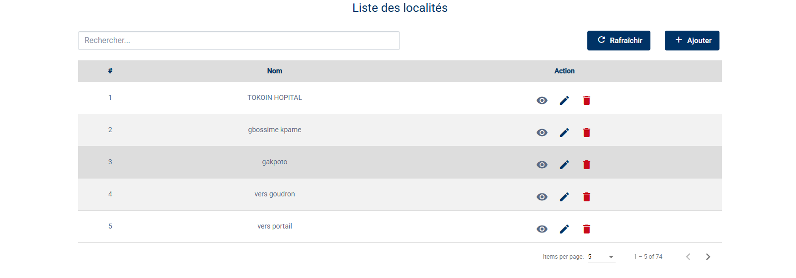
Pour ajouter une zone, cliquez sur Ajouter et donnez-lui un nom.
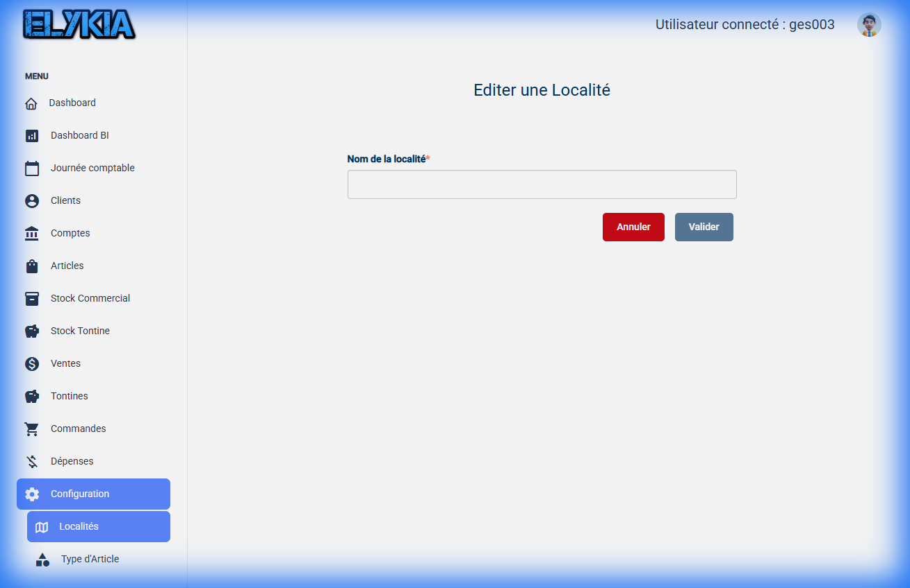
b. Les Catégories (Articles & Dépenses)
Pour avoir des rapports propres, classez vos données.
Types d'Article : Créez des familles (Motos, TV, Téléphones...).
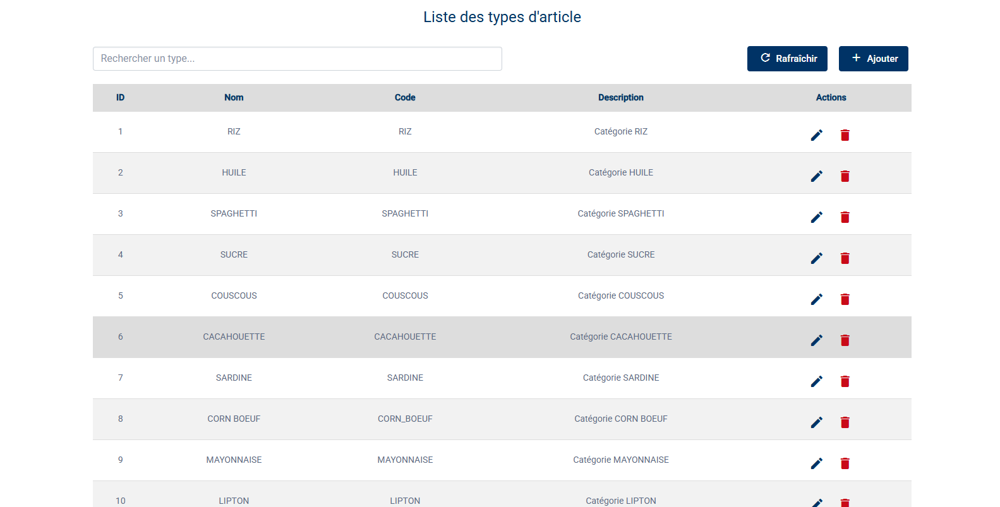
Pour créer une famille, cliquez sur Ajouter, donnez un nom et un code (ex: MOTO).
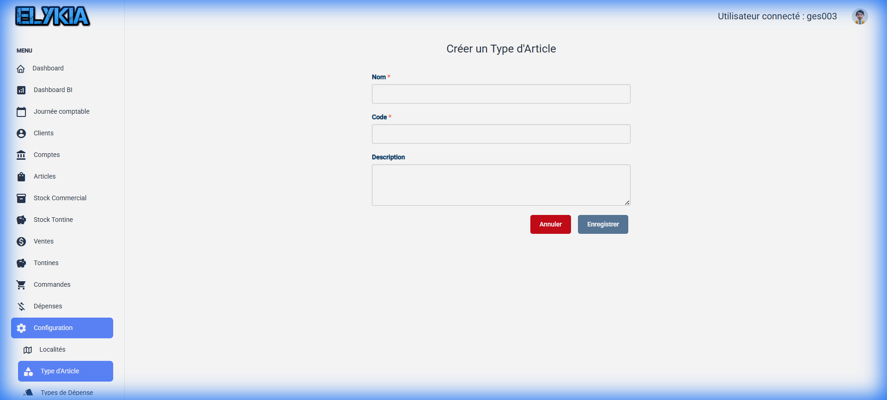
Types de Dépense : Créez vos postes de charges (Loyer, Carburant, Salaires...).
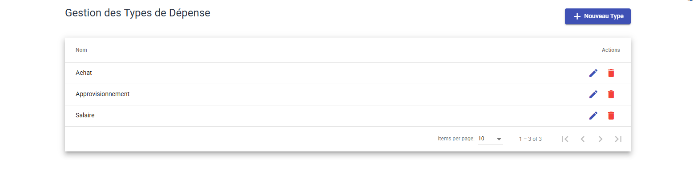
Pour ajouter un type de dépense, cliquez sur Nouveau Type.
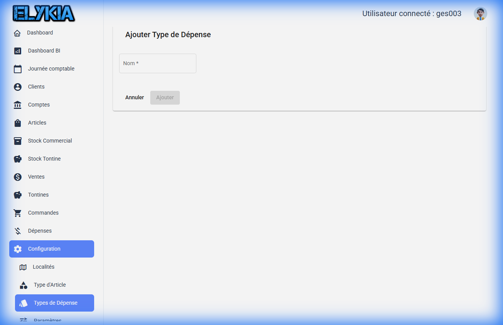
c. Les Paramètres Globaux (Attention !)
Ici, on touche au cœur du système (Taux de change, Options cachées...).
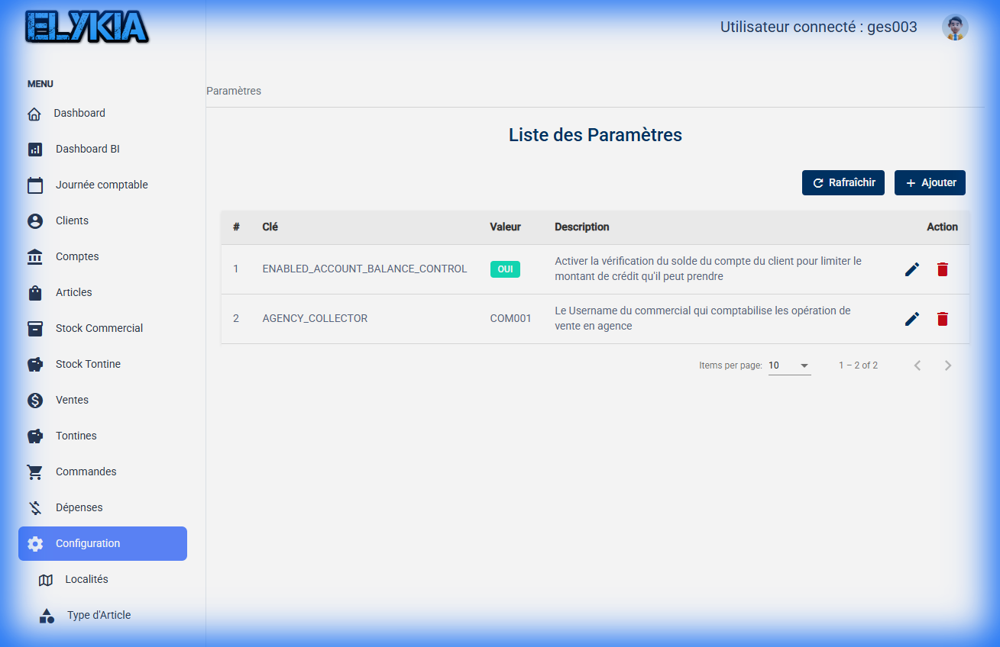
Pour modifier une valeur, cliquez sur le crayon. Conseil d'ami : Ne modifiez rien ici si vous n'êtes pas sûr à 100% de ce que vous faites. Une mauvaise manipulation peut changer le comportement de toute l'application.
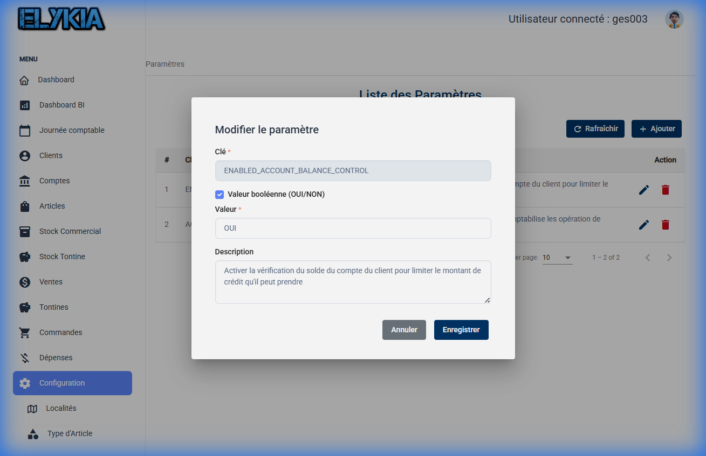
Vous avez maintenant toutes les clés pour administrer l'application comme un pro.
\newpage